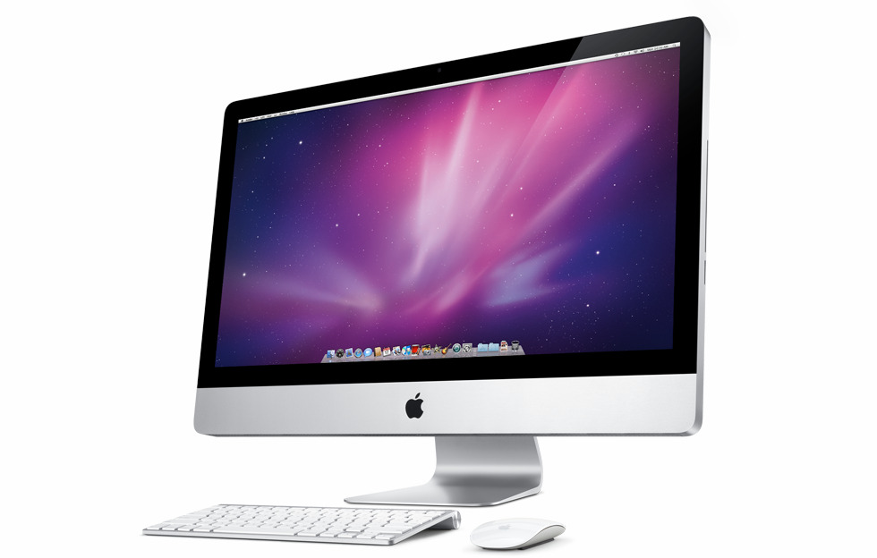

이진법을 이용하여 논리 연산, 저장을 수행하는 전자 기계. 학술적 용어로는 추상 기계라고도 한다. 대형 컴퓨터와 개인용 컴퓨터(데스크톱, 노트북, 태블릿)가 대표적으로 컴퓨터 하면 떠오르는 기기이고, 스마트폰, 스마트 워치로 대표되는 웨어러블 디바이스, 게임기, 임베디드 시스템, 일부 가전제품 및 기업의 장비등을 비롯해서 마이크로칩이 들어가는 온갖 기기는 전부 컴퓨터로 볼 수 있다. 초창기 개인용 컴퓨터는 BASIC 등 프로그래밍 언어를 기본적으로 탑재하는 것이 상식이었다. 왜냐하면, 상용 프로그램이라는 개념이 부족했으므로 사용자가 직접 프로그램을 만들어서 컴퓨터를 활용해야 했기 때문이다. 1970년대 이후에는 폰 노이만 구조에 기반을 둔 디지털 컴퓨터로 자주 구현된다. 컴퓨터가 최초로 발명되었던 1950년대 까지만 해도 크기부터가 집채만하고, 계산 속도도 사람보다 느려서 이런 장비를 대체 어디에 쓰냐는 논란이 많이 일어나기도 했지만, 기술의 발전을 거쳐 성능은 계속 업그레이드 되면서 크기도 많이 소형화되었다. 오늘날에는 공적인 장소든, 사적인 장소든 컴퓨터가 없는 생활은 상상하기 어려울 정도다.
